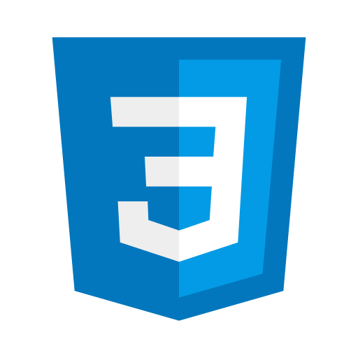
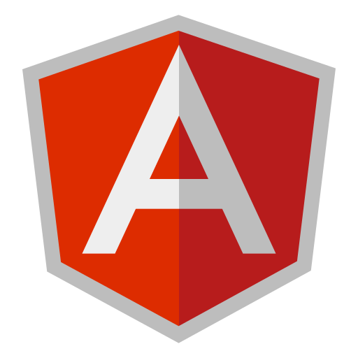

Hola, mi nombre es Rubén Mansilla. Soy estudiante de Informática en el
instituto DuocUC, actualmente cursando el noveno semestre de la
carrera de Ingeneria en Informatica.
Mi meta es involucrarme en proyectos o encargos en el área de
informática para reforzar los conocimientos adquiridos durante mi
formación académica. Me considero una persona adaptable, comprometida
y amable.


Actualmente curso el noveno semestre de Ingeniería en Informática en Duoc UC, profundizando mis conocimiento en gestión de proyectos tecnológicos, arquitectura de software, análisis de sistemas y transformación digital. Mi formación se orienta a la planificación, diseño e implementación de soluciones informáticas, integrando conocimientos técnicos y de gestión para optimizarprocesos y responder a las necesidades de las organizaciones.
Certificado EspecialidadTitulado de Analista Programador Computacional, con formación en análisis de requerimientos, diseño y desarrollo de soluciones informáticas. Durante mi formación adquirí conocimientos en programación, bases de datos y desarrollo de aplicaciones web, móviles y de escritorio, aplicando buenas prácticas para la construcción y mantenimiento de software.
Certificado de TituloRealize un curso excel desde Basico hasta Avanzado-Intermedio. Tengo el conocimiento para poder realizar analisis estadistico con los distintos elementos de trabajos en la herramienta.
CertificadoEstudié Administración de Empresas con mención en Recursos Humanos, donde adquirí conocimientos en planificación estratégica, finanzas y marketing, desarrollando habilidades para analizar problemas organizativos.
Certificado de TituloCoordinación y seguimiento del PMG de Transformación Digital y del Plan de Transformación Digital institucional, incluyendo diagnósticos, hitos, indicadores y reportes. Participación en la planificación de adquisiciones TI mediante levantamiento de requerimientos, elaboración de documentación técnica y procesos EVALTIC. Administración de plataformas transversales del Estado, como DocDigital, FirmaGob y Casilla Única, además de gestión de accesos en sistemas institucionales del MOP, como Firmador MOP, SSD y TransferMOP. Soporte informático a usuarios, gestión de activos tecnológicos y licencias de software. Apoyo en procesos de Transparencia Activa mediante administración de archivos y generación de enlaces en servidores SFTP.
Gestioné pedidos de ventas en marketplaces y en el sitio web de la empresa, asegurando el despacho y entrega al cliente. Mantuve comunicación con clientes para ventas al por mayor y al por menor, y coticé precios. Maneje la contabilidad de ventas, revisando utilidades y costos para evaluar el impacto mensual y asegurar la facturación correcta. Realicé análisis de métricas con Google Analytics y Excel para apoyar decisiones de marketing, y ayudé en web scraping para mantener la competitividad en precios.
Sitio web para un centro psicológico que gestiona citas para pacientes y empleados, permitiendo reservas y administración de citas. Utiliza una API para evitar reservas en días feriados y cuenta con funcionalidades CRUD a través del gestor administrativo de Django.